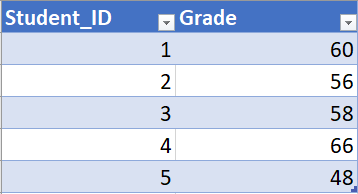
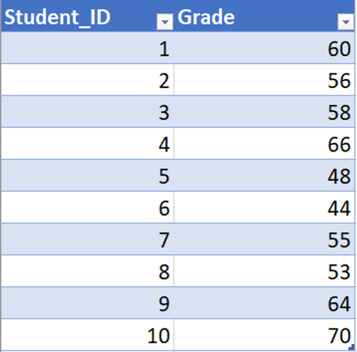
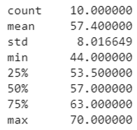
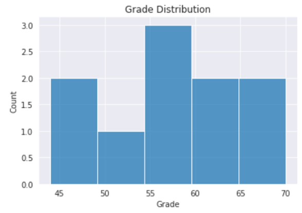
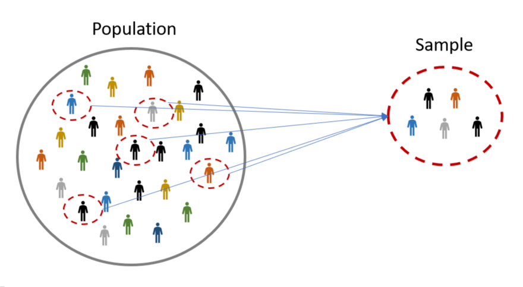
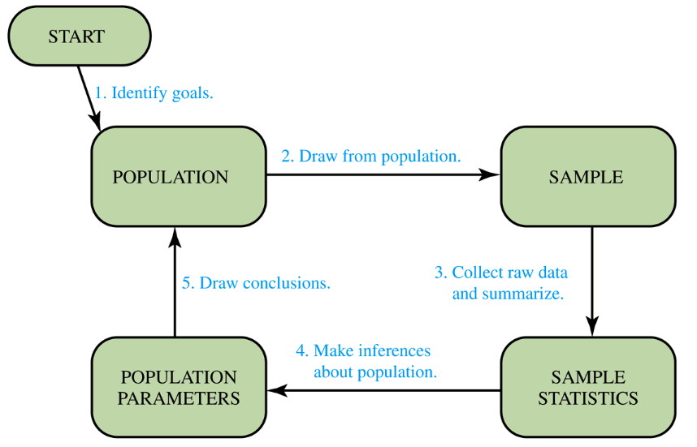

Welcome to my blog on this statistics series! Throughout this series, I’ll go through the necessary topics that will give you a well-rounded understanding of introductory statistics. To give you an idea of how the sequence will go, here are the topics that we’ll cover in order:
- Introduction to Statistical Study
- Numeric and Categorical Variables
- Basic Data Visualization in Statistics
- The Three Aspects of a Distribution
- Probability
- The Five Counting Rules
- Distribution
- Standardization
- Sampling Distribution Clearly Explained!
- Confidence Interval Estimation
- Determining Sample Size
- The Intuition behind Hypothesis Testing
- The Z-test
- The t-test
- Inference about Proportions
- Hypothesis Testing with Proportions
As you go through each topic one by one, you'll slowly build up your statistical sense. Without further ado, let's begin with our first topic!
What is Statistics?
Statistics is a branch of mathematics that transforms data into useful information for decision-makers. For example, consider the simple table of data below:

The table of data consists of 5 students and their grades. We can transform this table of data into more informative statistics like mean, maximum grade, minimum grade, etc. By adding all the grades and dividing by five, we can find that the mean grade is 57.6.
$$\frac{60+56+58+66+48}{5}=57.6$$
By calculating the mean score, the teacher can get a rough idea of how the class is performing as a whole. The teacher could also identify which students are underperforming and may need additional help. These interpretations of the statistic, however, would depend on domain knowledge. For example, we might think that the grade is out of 100 points, which would make the grade numbers look ugly. However, if the grade is only out of 70 points, then the results aren’t too bad after all. Knowing how many total points the grade is out of is domain knowledge. Combining domain knowledge with statistics, the teacher is able to derive useful insights for decision-making.
Descriptive and Inferential Statistics
There are two main types of statistics:
- Descriptive Statitics
- Inferential Statistics
So what's the difference between these two statistics?
Descriptive Statistics
Descriptive Statistics collect, summarize and describe data. Consider the same grade dataset but with 10 students.

We can derive a summary statistic for this small dataset easily.

The summary statistic here consists of the count of observation, mean, standard deviation, minimum value, 25% percentile, 50% percentile (median), 75% percentile and maximum value. These statistics describe the grade of the 10 students and give us a good idea about the grade distribution. To visualize the distribution even better, we can even plot out a histogram.

For those with zero background in statistics, you might have no idea what these summary statistics and graphs are about. Don't worry! We'll go through them in the coming stories. For now, just know that the summary statistics and the histogram are both descriptive statistics. They “describe” the data.
Inferential Statistics
Inferential Statistics draw conclusions and/or make decisions concerning a population based only on sample data. Oftentimes, it’s merely impossible or too costly to gather data from every single target. If 10,000 people enrolled in a course, it would be silly to go to all 10,000 people to ask for their grades. A smarter and more efficient approach is to collect data from a portion (eg. say 300 people) of that 10,000 people and use that small portion to represent the entire 10,000 people.
Terminology Alert!
The entire group that you want to draw conclusions about is called the Population. The small portion that you collect data from to represent the entire group is called the Sample.

One important acknowledgment about extracting samples from the population is the sampling method. You can imagine that if you only select girls in your sample, the sample may not be representative of the population (because the population consists of both boys and girls). So it’s important to use an appropriate, non-biased sampling method. The most common sampling technique is random sampling, in which you can compare the selection process to that of picking from a hat blindfolded. Essentially, every single target in the population has an equal chance of being selected for the sample.
By using an appropriate sampling method, your sample should more or less be representative of the population. After you collect data from your sample, you can calculate some measures (eg. mean) based on the sample data.
Terminology Alert!
Measures computed from the sample data are called sample statistics (eg. sample mean). Likewise, measures computed from the population data are called population parameters (eg. population mean).
In inferential statistics, because we don’t have the capacity to collect data from every single entity in the population, we cannot derive the population parameter. (if we don’t have the population data, how can we calculate the population mean? It’s just not possible.)
Instead, we can only estimate the population parameter, and we estimate it using sample statistics.Samples should be representative of the population (as we discussed before using the appropriate sampling method), so the mean of the sample (sample statistics) should also be a good estimate of the mean of the population (population parameter). We say sample statistics are unbiased estimators of population parameters.
This is the idea behind inferential statistics. We use a sample to make “inferences” about the greater population. The diagram below summarizes this process.

- What is your goal for the study? Determine the population of your subject and what you want to learn about the subject (population parameters).
- Select a sample from the population (with the appropriate sampling technique).
- Collect raw data from the sample and summarize the raw data.
- Use sample statistics to make inferences about the population parameters.
- Draw conclusions; determine what you learned and whether you achieved your goal.
Conclusion
Well done on your first completed story! We just discussed:
- What is statistics
- Descriptive and inferential statistics
- Population and sample
- Parameters and statistics
- Process of statistical study
We also stressed the importance of an appropriate sampling method. Take some time to digest the information, but be aware that this is just the surface of a tremendous field of study. We’re not even done with our first topic of the series. In the next story, we’ll talk about variables!
Next: Numerical and Categorical Variables